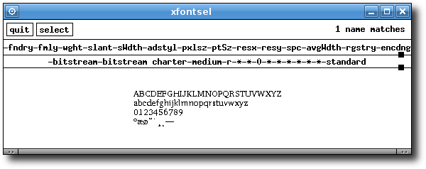

Ressourcen
Dieser Artikel wurde für die folgenden Ubuntu-Versionen getestet:
Dieser Artikel ist größtenteils für alle Ubuntu-Versionen gültig.
Zum Verständnis dieses Artikels sind folgende Seiten hilfreich:
Einige Programme bieten die Möglichkeit, gewisse (Standard-)Einstellungen auch über Konfigurationsdateien des XServers festzulegen. Mit Ressourcen sind also nicht Systemressourcen gemeint, sondern diese Dateien. Meist verwendet man diese systemweiten Standardeinstellungen bei Terminals wie xterm oder rxvt-unicode. Ob ein Programm dies unterstützt, steht in der Manpage des jeweiligen Programms. Die möglichen Einstellungen werden in den Manpages als "Ressourcen" bezeichnet. Um herauszufinden, welche installierten Programme dies unterstützen, kann man auch den folgenden Befehl ausführen [3]:
dir /etc/X11/app-defaults
Jetzt bekommt man alle Programm aufgelistet, die Standardeinstellungen unterstützen. Für benutzerdefinierte Anpassungen wurde früher die Datei ~/.Xdefaults verwendet. Inzwischen gilt diese Datei als veraltet (obsolet). An ihre Stelle tritt die Datei ~/.Xresources, die die gleiche Syntax benutzt.
Allgemein¶
Die Einstellungen trägt man mithilfe eines Editors [1] entweder für systemweite Änderungen mit Root-Rechten in /etc/X11/app-defaults/PROGRAMMNAME oder für benutzerspezifische Optionen in die Datei ~/.Xresources im Homeverzeichnis ein. Wenn die Datei noch nicht existiert, kann sie manuell erstellt werden. Die benutzerspezifischen Einstellungen überschreiben dabei die systemweiten Vorgaben.
Die allgemeine Syntax der ~/.Xresources sieht wie folgt aus:
PROGRAMMNAME.KLASSE.OPTIONSNAME: WERT
und für die systemweit gültige /etc/X11/app-defaults/PROGRAMMNAME ist das beispielsweise nur:
*OPTIONSNAME: WERT
da der Programmname schon im Dateinamen enthalten und eine Klasse nicht immer erforderlich ist. Der Doppelpunkt : fungiert als Trennzeichen zwischen einer Option und dem dazugehörigen Wert. Möchte man Anpassungen kommentieren oder bestimmte Einstellungen deaktivieren, erfolgt das mit dem Zeichen ! (Ausrufezeichen). Beispiele:
! eine Kommentarzeile PROGRAMMNAME.OPTIONSNAME: WERT ! ein weiterer Kommentar !PROGRAMMNAME*OPTIONSNAME: WERT eine deaktivierte bzw. auskommentierte Zeile
Konfiguration am Beispiel von xterm¶
Ressourcen in der ~/.Xresources haben die Form:
xterm.OPTIONSNAME: WERT
bzw. für die systemweite Konfigurationsdatei /etc/X11/app-defaults/XTerm
*OPTIONSNAME: WERT
Möchte man beispielsweise die Option foreground auf yellow setzen, so lautet die Option:
xterm.foreground: yellow
bzw. in der systemweiten Datei /etc/X11/app-defaults/XTerm-color:
*foreground: yellow
Dies bewirkt, dass xterm standardmäßig eine gelbe Schriftfarbe hat.
Schrift verändern¶

Für die Schrift muss man kryptische Zeichenketten wie
*headingFont: -bitstream-bitstream vera sans mono-medium-r-*-*-12-*-*-*-*-*-*-*
verwenden. Um solche Zeichenketten zu erstellen, verwendet man am besser das Programm xfontsel, das durch das gleichnamige Paket installiert wird [2]:
xfontsel
 mit apturl
mit apturl
Paketliste zum Kopieren:
sudo apt-get install xfontsel
sudo aptitude install xfontsel
Bedienung¶
In der ersten Zeile steht "select" und "quit". Wenn man auf "select"  -klickt, wird die Zeichenkette in die Zwischenablage kopiert und durch -Klicken auf "quit" wird das Programm beendet.
-klickt, wird die Zeichenkette in die Zwischenablage kopiert und durch -Klicken auf "quit" wird das Programm beendet.
In der zweiten Zeile stehen viele Abkürzungen. Wenn man auf eine -klickt, erscheint ein Menü mit Auswahl-Möglichkeiten. Am besten man probiert ein bisschen herum, bis etwas entsteht, das einem gefällt. Das Ergebnis sieht man in der großen Zeile von xfontsel.
In der dritten Zeile sieht man die Zeichenkette, welche man sucht.
Verwendung¶
In der ~/.Xresources muss also Folgendes stehen:
xterm.font: ZEICHENKETTE
und in der systemweiten Datei /etc/X11/app-defaults/XTerm dementsprechend:
*font: ZEICHENKETTE
Links¶
Manpage von X
 - Informationen zu Standardeinstellungen im Abschnitt
- Informationen zu Standardeinstellungen im Abschnitt ResourcesX resources
- Beispiele für diverse Programme
- Erstellt mit Inyoka
-
 2004 – 2017 ubuntuusers.de • Einige Rechte vorbehalten
2004 – 2017 ubuntuusers.de • Einige Rechte vorbehalten
Lizenz • Kontakt • Datenschutz • Impressum • Serverstatus -
Serverhousing gespendet von